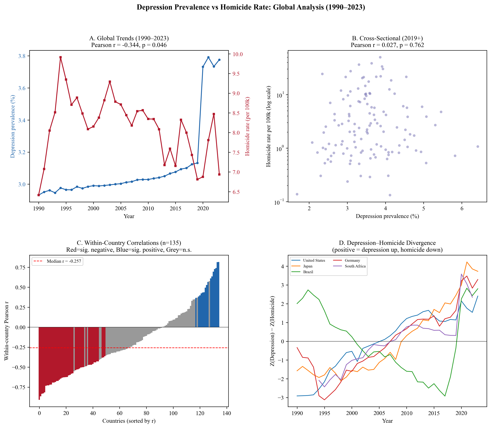
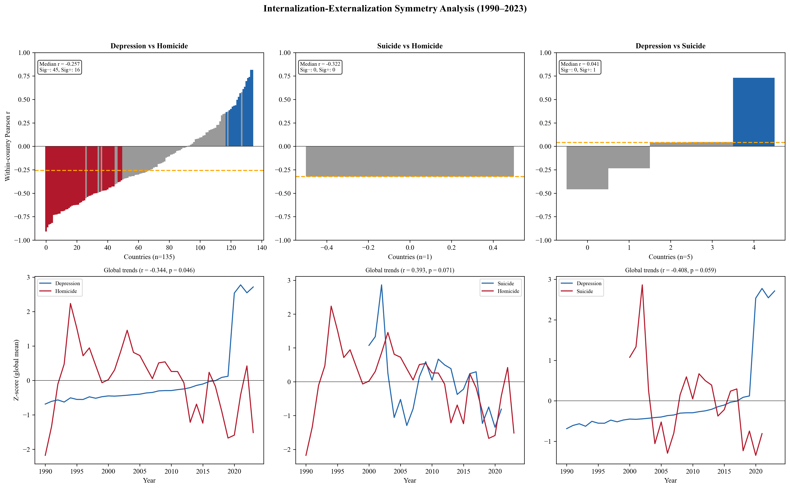
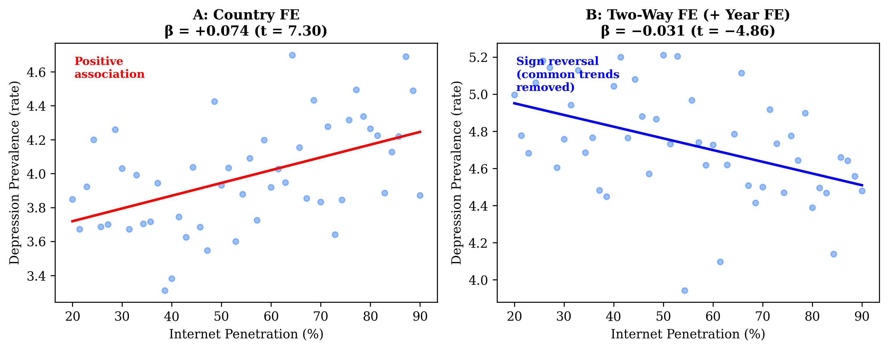
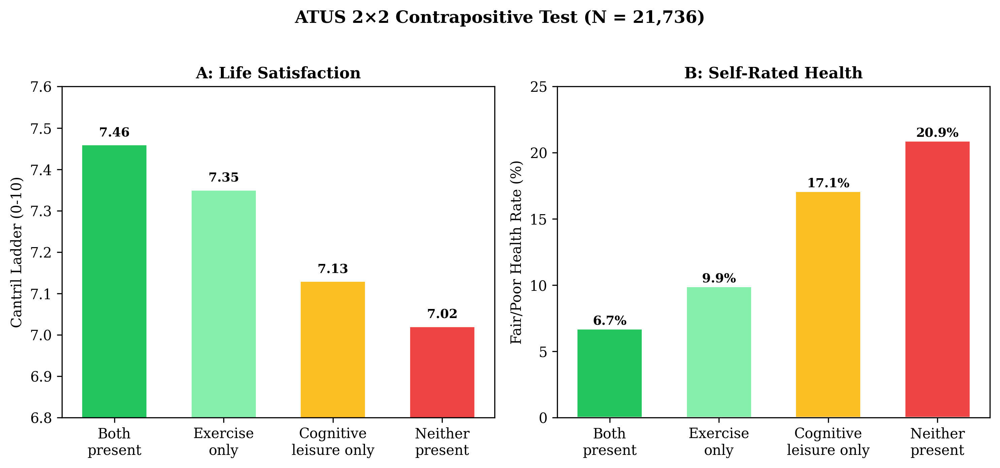
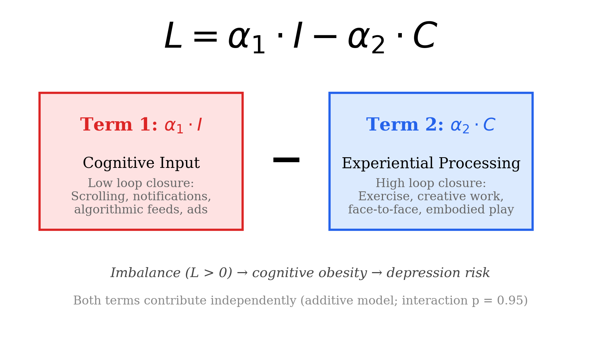

Cognitive-Experiential Imbalance as a Unifying Framework for Depression, Violence, and Information Overload
The mental health impact of digital technology depends not on how much time you spend on screens, but on the balance between involuntary cognitive input and experiential processing — classified by the degree of sensorimotor loop closure with the environment.

89% of countries show negative within-country dep–hom correlation. Internalization–externalization symmetry contradicts Achenbach's independence assumption. median r = −0.64 N = 135 countries
Internet×GDP/capita retains predictive power for depression after controlling for GDP change. Δproxy t=3.19 ΔGDP t=0.16 n.s.
Hansen PTR detects a significant protective saturation point for suicide but not for depression. Suicide γ*=25.7, F=213 Depression p=0.654
L = α₁·I − α₂·C validated: additive model beats ratio R = I/C model. ΔAIC = 86 N = 21,736
High passive input with no exercise or active leisure produces 2× the Fair/Poor health rate. 25.2% vs 12.5% p=8.57×10⁻¹⁶

Depression–homicide, suicide–homicide, and depression–suicide correlations across 135 countries with global Z-score trends.

Two-way fixed effects reveals a threshold where the ad proxy's association with depression reverses sign.

High passive input with no exercise produces 2× the Fair/Poor health rate. The additive balance model validated.

Cognitive load as the net imbalance between involuntary input and experiential processing capacity.
This is exploratory research. The following limitations constrain all findings:
Full analysis pipeline from data download to alternative estimators. Python + R. All public data.
The desk-based analysis has reached its ceiling. The remaining requirements for publication-quality evidence are field-dependent: